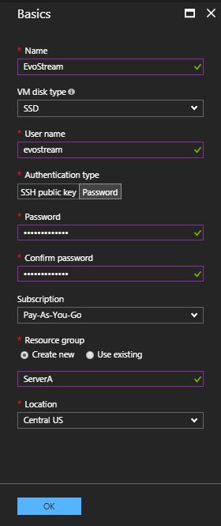
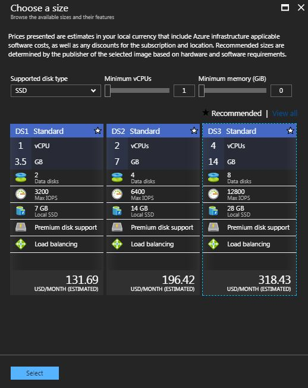
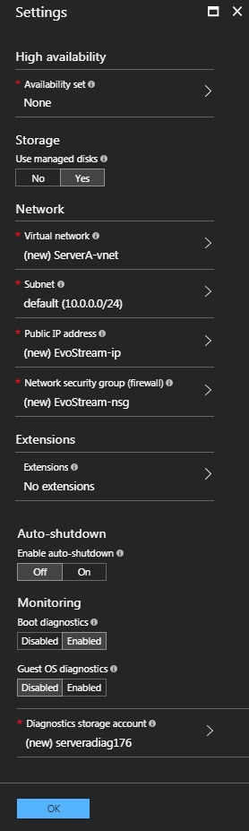
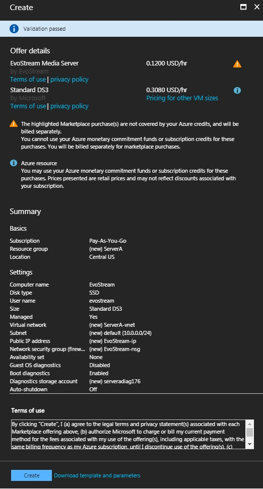

Getting Started
Pre-requisites
- Microsoft Account
Deployment
To get started with the EvoStream Media Server (EMS) on Azure, the first thing to do is to setup the virtual machine by using the Quick Deployment or Setting up the Virtual Machine from scratch.
A. Quick Deployment
To lessen the time of configuring a virtual machine, clicking the links below will navigate you to the Custom Deployment Template.
- Quick-Deploy: Steps 1 and 2 below can be skipped by clicking one of the following buttons:
- Quick-Deploy EvoStream Media Server 1.7.1 for Windows Server 2012 R2

- Quick-Deploy EvoStream Media Server 1.7.1 for Ubuntu 14.04 64-bit
- Quick-Deploy EvoStream Media Server 1.7.1 for Windows Server 2012 R2
Note: The size of the machine used in this setup is the A5 Standard.

B. Setup Virtual Machine Environment
-
Search for the EvoStream Media Server in the Azure marketplace, or simply follow this link.

-
Select the operating system for the virtual machine to be created. Click on Create Virtual Machine button.

Images available:
- EvoStream Media Server for Windows - Windows Server 2012 R2
- EvoStream Media Server for Ubuntu - Ubuntu 14.04 64-bit
-
Sign in your Microsoft Azure account if not yet signed in. You will be redirected to the EvoStream Media Server page. Read on the notes and if ready, click on the Create button.

-
Configure the virtual machine settings based on your preferences:
- Configure basic settings

-
Choose virtual machine size
**Note:** Click on View all to see all the available machine size

- Configure optional features

-
Review Summary

-
Buy 
-
Review the Settings, Offer Details and Terms of Use then click Purchase to start the deployment
-
To check if the image has been created, on the Microsoft Azure Dashboard, click on the Virtual machines. You will now see the image created once the deployment succeeded.
Note: The machine is started after the deployment